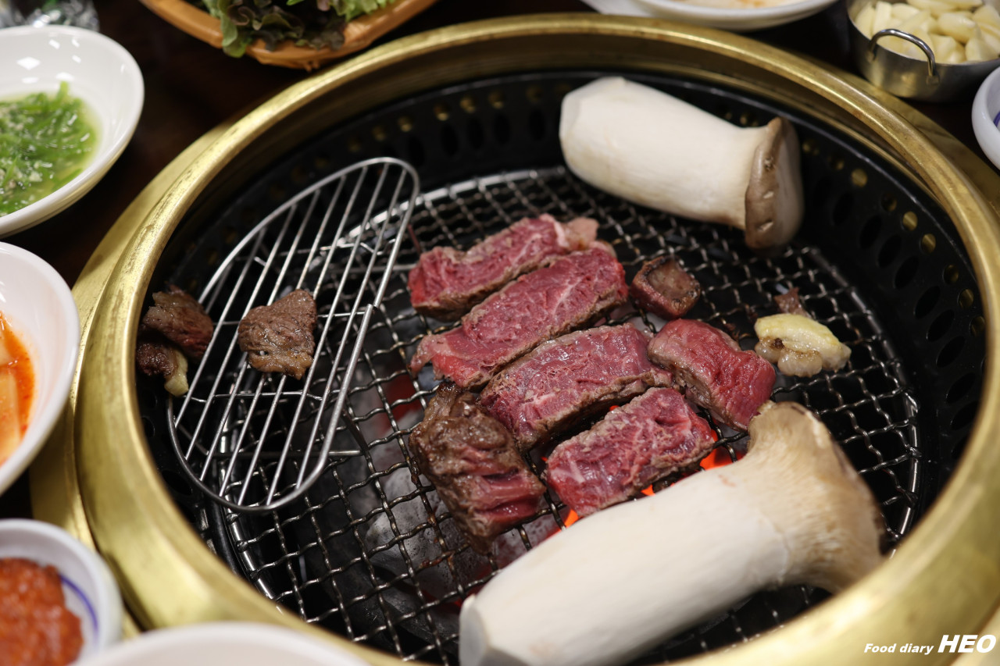
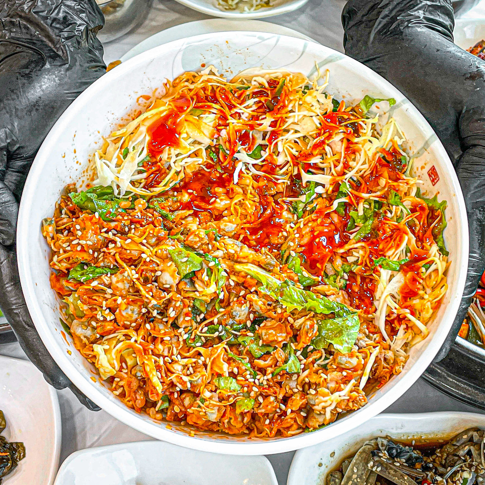

경상남도의 맛집
지역을 선택하세요:
거창군
창녕군
밀양시
양산시
하동군
진주시
창원시
김해시
고성군
남해군
통영시
거제시
사진을 누르면 네이버 페이지로 이동합니다.
거창군 맛집
수승대 오담
다우리밥상
외양간구시

창녕군 맛집
대중분식당
나루 coffee&restaurant
김숙녀시래기밥상
밀양시 맛집
장사부
굴림당
설봉돼지국밥
양산시 맛집
수백당 양산중부동점
신비숲가든 양산본점
봉화숯불갈비
하동군 맛집
황금재첩식당

쉬어가기좋은날식당
청운식당
진주시 맛집
천황식당
진주냉면산홍 본점
망치공장
창원시 맛집
고집남 진해점
겐쇼심야라멘
쿠버스 그릴
김해시 맛집
외식명가 화로정
로담
대동할매국수
고성군 맛집
본토대가
고성한우명가
계림새우나라
남해군 맛집
부어스트라덴
램스하우스 남해
쿤스트라운지
통영시 맛집
뚱보할매김밥집
동피랑쭈굴
대풍관
거제시 맛집
거제도더꽃 매미성점
바릇
성포끝집